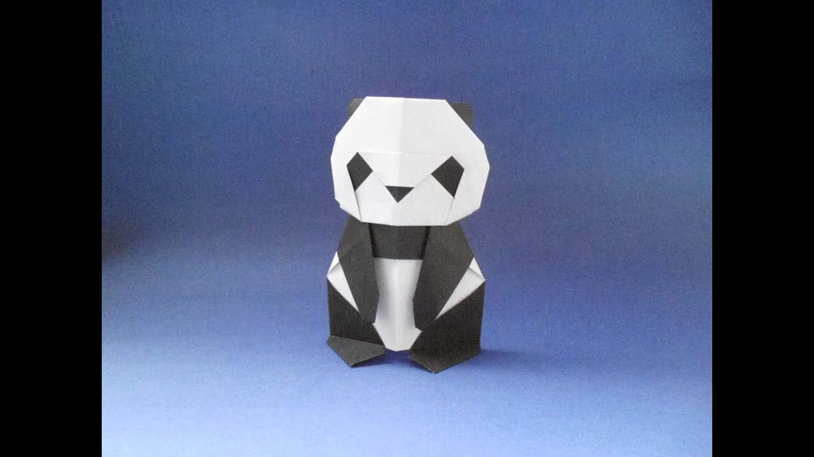

MAKE CAMEL
INTERESTING FACTS ABOUT CAMEL- Camel's ears are furry
- Camel can move easily across the sand because of his specially designed feet
- When they find water they will drink as much as possible

MAKE CHAMELEON
INTERESTING FACTS ABOUT CHAMELEON- Chameleon are reptiles that are part of iguana suborder
- Changing skin color is an important part of communication between them
- Most chameleons have a prehensile tail that they use to wrap the tree branches

MAKE PEGION
INTERESTING FACTS ABOUT PIGEON- Pegions are increadibly complex and intelligent animals
- Pigeons are renowed for their outstanding navigational abilities
- Pigeons have excellent hearing abilities

MAKE TEDDY BEAR
INTERESTING FACTS ABOUT TEDDY-BEAR- The teddy was named after President Theodore Roosevelt, after he refused to shoot a bear during a 1902 hunting trip.
- Inspired by a cartoon featuring the event, shopkeeper Morris Michtom and his wife Rose made a stuffed bear with a sign 'Teddy's bear' and left it in their shop window
- Bears grieve deeply for others

MAKE PANDA
INTERESTING FACTS ABOUT PANDA- A giant panda is much bigger than your teddy bear
- Giant pandas are good at climbing trees and can also swim
- Pandas go from pink to white and black (or brown)

MAKE RED CICADA
INTERESTING FACTS ABOUT RED-CICADA- Cicadas can survive a huge fall as babies, or nymphs
- The loud whirring or buzzing sound you hear is an all-male cicada chorus
- They're true bugs (from the order Hemiptera)